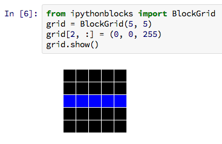

The recent University of Washington boot camp was my first chance to try teaching Python with ipythonblocks, and it was a great success!

The students reported that the immediate feedback from ipythonblocks was a great way to see what their code was doing. We were able to move quickly through topics like for-loops and if-statements in relative comfort, and even cover slicing with ease.
I had always hoped that the opportunities for creativity with ipythonblocks would appeal to students. At the UW boot camp we did observe people, especially those who grasped the concepts quickly, striking off on their own to experiment with larger grids and more complex algorithms for varying block color. I think this is a great advantage of the visual nature of ipythonblocks; there is only such much creative fun to be had playing with lists, but far more possibilities with what is essentially a grid of pixels.
My only regret is that we ran out of time so the students didn't get to make Starry Night or practice with files and functions as much as I'd have liked. I think it wouldn't be too hard to expand the lesson I'd planned so that we spent all day playing with ipythonblocks, but of course we'd lose time for other things.
Originally posted 2013-03-02 by Matt Davis in University of Washington, Tooling.
comments powered by Disqus